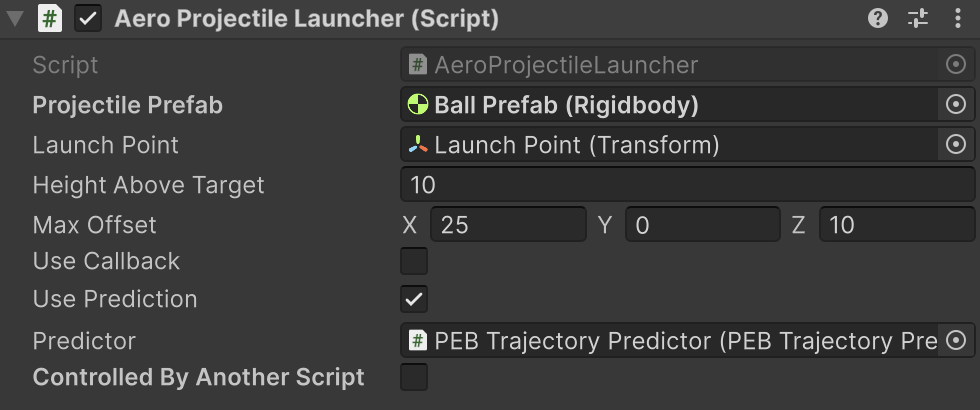

Projectile Toolkit > Projectile Aerodynamics Version 3.1
📚 Manual
Introduction
Projectile aerodynamics models aerodynamic forces on projectiles without compromising their ability to hit targets.
You can use this feature to simulate curve effect seen in sports such as football, baseball, golf (draw/fade), etc. You can also use it to simulate wind, air drag, or implement creative weapons, like boomerangs.
Template Usage Guide
- Quick Start
Templates are "high-level" prefabs that contain all essential components needed for specific use cases, with no-code/low-code development capability.
Template location: .../Blobcreate/Projectile Toolkit/Templates/Aero Projectile Launcher.prefab
Drag and drop the template to the scene.
Add your projectile prefab to the inspector property Projectile Prefab.
To control the template with scripting API, make sure Controlled By Another Script is turned on in the inspector. Otherwise, the template has a default behavior: launching when the left mouse button is pressed.
Tweak the settings in the inspector, and control the template in your scripts by calling
AimAt(...)andLaunch(). Example:xusing Blobcreate.ProjectileToolkit.Aerodynamics;public class LaunchController : MonoBehaviour{[SerializeField] AeroProjectileLauncher launcher;[SerializeField] Transform target;void Update(){launcher.AimAt(target.position);if (Input.GetMouseButtonDown(0)){launcher.Launch();}}}
- Inspector Properties

💡Tip: We have utilized a quality-of-life feature: From the inspector, you can click on the question icon, it will open your browser and bring you directly here.
Projectile Prefab: Projectile you want to launch. The projectile must have a Rigidbody component and an AeroRuntime component attached.
Launch Point: Start position of the projectile.
Height Above Target: Highest point of the trajectory relative to the target point (end point). Internally it uses Projectile.VelocityByHeight(...) to compute launch velocity. doc link. Advanced users can modify line 98 to change the computation method.
Max Offset: Maximum displacement along local space for a curved trajectory. This shapes the horizontal movement of the trajectory.
The local space is formed by using end - start vector (ignoring y) as forward vector, and use the middle point between end and start as the origin.
The figure below is a top-down view of a scene, it explains the definition and shows two example values of maxOffset vector (you can also set a non-zero value to y axis, it changes the gravity and thus changes the overall movement speed of the projectile).

Use Callback: Whether to invoke the Action you assigned to the Action OnFinished. See "Scripting API > OnFinished".
Use Prediction: Whether to predict the trajectory of the movement and display it.
Predictor: PEB Trajectory Predictor that is used for trajectory prediction and rendering. The template comes with one preconfigured.
Controlled By Another Script: Make sure this is on so that you can control the template using scripting API.
- Scripting API
The API is intuitive and straightforward.
AimAt and Launch are the methods you'll use most of the time.
✰ AimAt(...)
Aim at the target point.
xxxxxxxxxxpublic void AimAt(Vector3 point)✰ Launch()
Launch the Projectile Prefab you defined in the inspector, using the velocity you calculated earlier by calling AimAt(...).
xxxxxxxxxxpublic void Launch()UsePrediction
Whether to predict the trajectory of the movement and display it.
xxxxxxxxxxpublic bool UsePrediction { get; set; }OnFinished
Custom callback that is triggered when the projectile reaches its target, providing the projectile's Rigidbody as an arg for use. Note that it is triggered after a pre-calculated time, not by collision.
xxxxxxxxxxpublic Action<Rigidbody> OnFinished { get; set; }Other Properties
The properties in the Inspector (we described earlier in the Inspector Properties section) are all public and you can modify them through scripts.
Low-Level Implementation Guide
Note
This section is intended for advanced users, to be used in conjunction with the Low-Level Reference. Most users will only need the high-level template and Scripting API.
Tip
A concrete example script (the main script of the template) can be found here: .../Blobcreate/Projectile Toolkit/Core/Projectile Aerodynamics/AeroProjectileLauncher.cs
The template can handle 99% of scenarios, but sometimes you may want to implement the Projectile Aerodynamics feature into your own class for custom purpose, here's how:
1. Create a solver
In Start() or Awake(), create a new AeroSolver instance.
xxxxxxxxxxaeroSolver = new AeroSolver();2. Solve
Calculate all the data needed by calling Solve(...). You can add the code below directly into your logic or encapsulate it to a method.
xxxxxxxxxxvar offY = new Vector3(0, maxOffset.y, 0);// You can use any velocity method in the Projectile class.var vRaw = Projectile.VelocityByHeight(startPoint, targetPoint + offY, 10f);var vReal = aeroSolver.Solve(startPoint, targetPoint, maxOffset, vRaw);3. Run
This is the final step, we launch the projectile, and then set up execution of projectile aerodynamics through AeroRuntime component. And now your projectile moves in the air in curve!
xxxxxxxxxxvar myProjectile = Instantiate(projectilePrefab, startPoint, Quaternion.identity);myProjectile.AddForce(vReal + Projectile.VelocityCompensation, ForceMode.VelocityChange);
myProjectile.TryGetComponent<AeroRuntime>(out var rt);rt ??= myProjectile.gameObject.AddComponent<AeroRuntime>();rt.Configure(aeroSolver, myProjectile);rt.Run();
Options:
You can add any custom methods to the Action
OnFinished, it will be called when the projectile reaches target.xxxxxxxxxxaeroSolver.OnFinished = (ball) =>{ball.angularVelocity = Vector3.zero;ball.velocity = new Vector3(0, 10, 0);};
If you also want to predict the trajectory, in
Start(), set up aPEBTrajectoryPredictorinstance (here we call itpredictor), the instance will be used later:xxxxxxxxxxvar b = Instantiate(ballPrefab, startPoint, Quaternion.identity);predictor.Simulatee = b;predictor.AeroSolverInstance = aeroSolver;b.gameObject.SetActive(false);Call the
predictorwhen you want to predict the trajectory.xxxxxxxxxxpredictor.LaunchVelocity = vReal + Projectile.VelocityCompensation;predictor.SimulateAndRender();
📔 Low-Level Reference
Note
This section is intended for advanced users as a low-level scripting reference, to be used in conjunction with the Low-Level Implementation Guide. Most users will only need the high-level template and Scripting API.
Projectile Aerodynamics' code is in namespace Blobcreate.ProjectileToolkit.Aerodynamics.
The low-level code consists of 2 classes:
AeroSolver: Pure C# class that do the computation.AeroRuntime: Unity component that needs to be attached to a projectile to use.
Below, the items marked with a star✰ are the most important.
AeroSolver
SolvedVelocity { get; }
xxxxxxxxxxpublic Vector3 SolvedVelocity { get; }The returned value of Solve(...) — the computed launch velocity that takes projectile aerodynamics into account. Only valid after Solve(...) has been called.
Acceleration { get; }
xxxxxxxxxxpublic Vector3 Acceleration { get; }Computed continuous acceleration that is used to conduct projectile aerodynamics.
OffsetVector { get; }
xxxxxxxxxxpublic Vector3 WorldOffset { get; }World space version of maxOffset (one parameter you passed to method Solve(...)). It is used internally to get offset target point (= target + OffsetVector).
TimeOfFlight { get; }
xxxxxxxxxxpublic float TimeOfFlight { get; }Time needed for projectile to reach endpoint. The acceleration (force) is applied during this period of time.
OnFinished { get; set; }
xxxxxxxxxxpublic Action<Rigidbody> OnFinished { get; set; }Custom callback that is triggered when the projectile reaches its target, providing the projectile's Rigidbody as an arg for use. Note that it is triggered after a pre-calculated time, not by collision.
✰ Solve(...)
Computes the data required for projectile aerodynamics.
xxxxxxxxxxpublic Vector3 Solve(Vector3 start, Vector3 end, Vector3 maxOffset, Vector3 v)start: Launch point.
end: Target point.
maxOffset: Maximum displacement along local space for a curved trajectory. The local space is formed by using "end - start" vector (ignoring y) as forward vector.
v: The original launch velocity that makes the projectile move from start point to end point without taking aerodynamics into account.
returns: The modified launch velocity that takes aerodynamics into account.
ApplyAcceleration(...)
Executes one physics update of projectile aerodynamics.
This is used internally in PEBTrajectoryPredictor class for projectile aerodynamics prediction, but for the execution applied to real projectile, we recommend using AeroRuntime class.
xxxxxxxxxxpublic bool ApplyAcceleration(Rigidbody rBody, ref float timer)rBody: The Rigidbody of the object to which the acceleration is applied.
timer: This is used as a runtime context, it records how much time has been passed since the projectile launch.
returns: Whether or not the acceleration is applied. False means the procedure is finished.
AeroRuntime
TimeOfFlight { get; }
xxxxxxxxxxpublic float TimeOfFlight { get; }Time needed for projectile to reach endpoint. The acceleration (force) is applied during this period of time.
Timer { get; }
xxxxxxxxxxpublic float Timer { get; }How much time has been passed since the projectile launched.
✰ Configure(...)
Configure the runtime. A valid AeroSolver instance should have been called Solve(...) beforehand.
xxxxxxxxxxpublic void Configure(AeroSolver solver, Rigidbody rBody)solver: AeroSolver instance to get data from.
rBody: Rigidbody you want to control.
✰ Run()
Starts the internal timer and logic (applying Acceleration, etc.).
xxxxxxxxxxpublic void Run()
Stop()
Stops applying Acceleration, and resets the internal timer. Useful for replay, handling collisions, etc.
xxxxxxxxxxpublic void Stop()